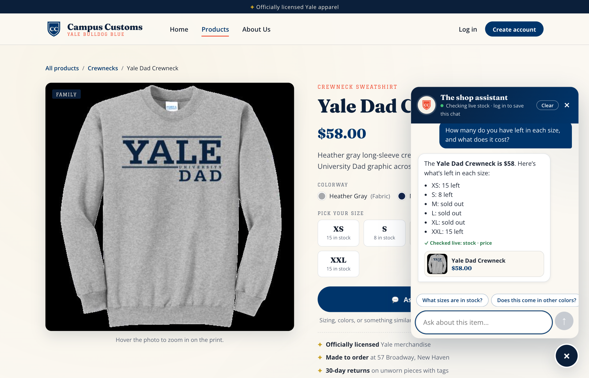
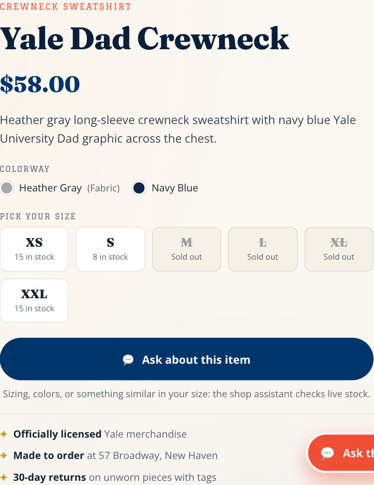
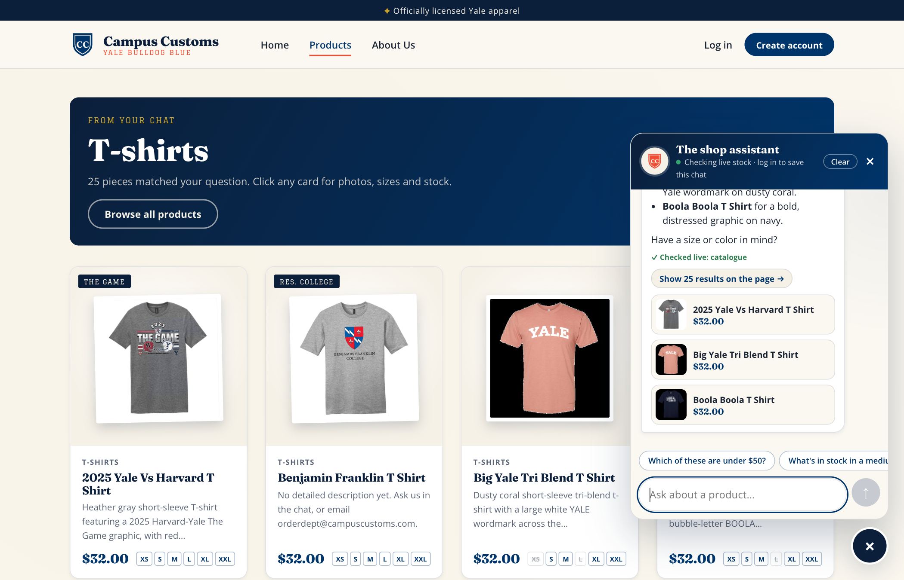
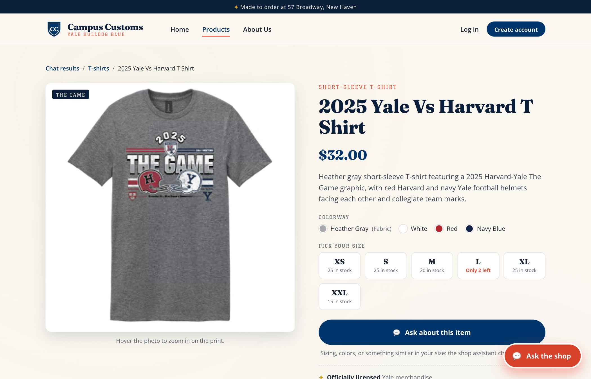
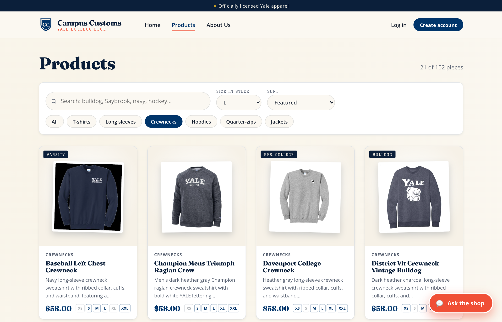
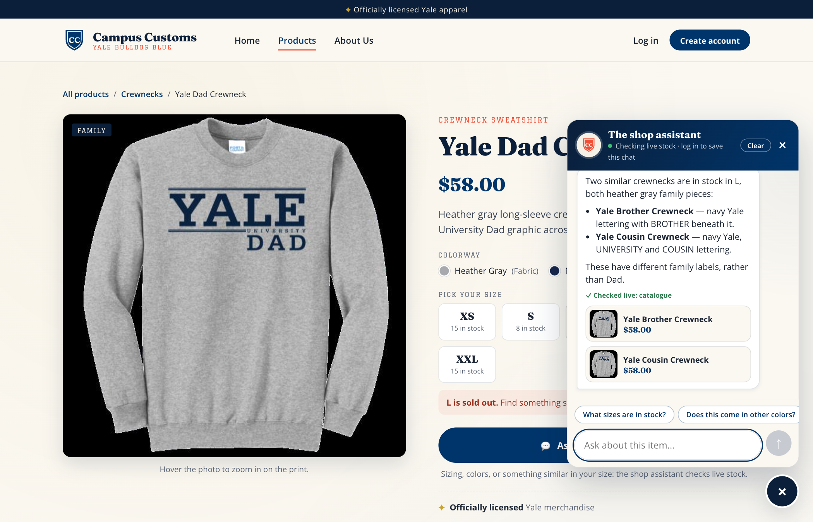

Problem 11 · Live site tested on 2026-09-27 · React + Vite frontend (localhost:5173), FastAPI + PydanticAI backend (localhost:8000), model gpt-6-astra, data from data/campus_customs.db
| # | Check | What was tested | Result |
|---|---|---|---|
| 1 | Chat checks inventory | Chat reports price and stock per size for the Yale Dad Crewneck | PASS all 6 sizes and the price match the database |
| 2 | Dynamic search-result cards | "What T-shirts do you have?" puts matching product cards on the page | PASS 25 of 25 T-shirts shown; a card opens its product page |
| 3 | Usability feature (Problem 9) | Size row + "Size in stock" filter, and sold-out → in-stock alternatives | PASS 21 crewnecks with L shown; alternatives really have L |
On the Yale Dad Crewneck page, a guest asked: "How many do you have left in each size, and what does it cost?"

check_stock and get_price database tools, not from the model's memory.| Size | Chat said | Database inventory.quantity | |
|---|---|---|---|
| XS | 15 left | 15 | match |
| S | 8 left | 8 | match |
| M | sold out | 0 | match |
| L | sold out | 0 | match |
| XL | sold out | 0 | match |
| XXL | 15 left | 15 | match |
| Price | $58 | catalogue.price = 58.0 | match |

GET /api/products/yale-dad-crewneck.Starting on the Home page, a guest asked: "What T-shirts do you have?"

/products?view=chat and showed a "From your chat · T-shirts · 25 pieces" banner with full product cards (image, name, price, short description, sizes). All 25 T-shirts in the database are on the page, not just the 3 the chat names.| Measured | Value |
|---|---|
| Page before → after the question | / → /products?view=chat |
| Cards on the page | 25, all labelled "T-SHIRTS" |
| T-shirts in the database | 25 (garment_type contains "t-shirt") |
| Backend log | search_products(category='T-shirts', limit=6); the page gets every match of that search (the page_results API contract from Problem 7) |

Feature: "Stock and sort at a glance", a size row on every card plus a "Size in stock" filter. URL: /products?category=Crewnecks&size=L

find_alternatives tool)
find_alternatives tool offered two similar family crewnecks that really are in stock in L (database: Yale Brother Crewneck L = 2, Yale Cousin Crewneck L = 15, both $58).